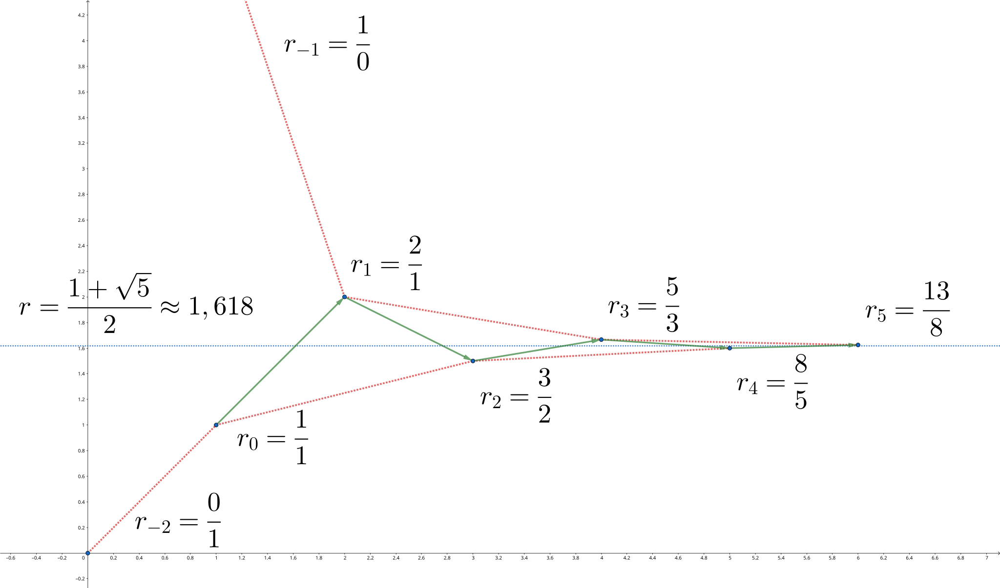
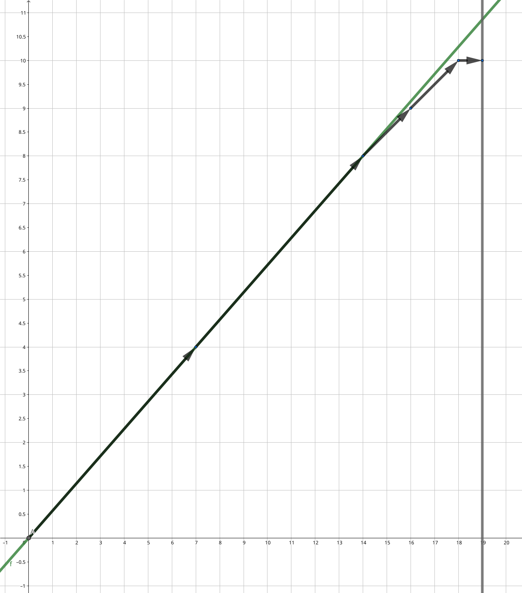

Liên phân số
Giới thiệu
Liên phân số có thể biểu diễn số thực như giới hạn của một dãy phân số hữu tỉ hội tụ. Dãy phân số này dễ tính và cung cấp xấp xỉ tốt nhất cho số thực đó, nên thường được dùng trong lập trình thi đấu. Ngoài ra, liên phân số liên hệ chặt chẽ với thuật toán Euclid nên có thể áp dụng cho nhiều bài toán số học.
Về hiện thực thuật toán liên phân số
Bài viết cung cấp một loạt hiện thực thuật toán liên phân số; một số thuật toán có thể không đảm bảo các số nguyên trung gian nằm trong phạm vi 32/64-bit. Trong trường hợp này, hãy tham khảo bản Python, hoặc thay kiểu số nguyên trong C++ bằng lớp số nguyên lớn. Để nhấn mạnh trọng tâm, một số đoạn mã sẽ gọi lại các hàm đã cài đặt ở phần trước và không lặp lại.
Liên phân số
Liên phân số (continued fraction) tự thân chỉ là một ký hiệu hình thức.
Liên phân số hữu hạn
Với dãy \(\{a_k\}_{i=0}^n\), liên phân số \([a_0,a_1,\cdots,a_n]\) biểu diễn khai triển
Liên phân số có nghĩa khi và chỉ khi khai triển tương ứng có nghĩa. Các \(a_k\) gọi là hạng (term) hoặc hệ số (coefficient) của liên phân số.
Ký hiệu
Dạng tổng quát hơn cho phép tử số trong khai triển không nhất thiết bằng \(1\), khi đó ký hiệu liên phân số cũng cần thay đổi; điều này vượt ra ngoài phạm vi bài viết. Ngoài ra, một số tài liệu viết dấu phẩy đầu tiên bằng dấu chấm phẩy “\(;\)”, nhưng ý nghĩa không khác với ký hiệu ở đây.
Liên phân số cũng có thể mở rộng cho dãy vô hạn.
Liên phân số vô hạn
Với dãy vô hạn \(\{a_k\}_{i=0}^\infty\), liên phân số \([a_0,a_1,\cdots]\) biểu diễn giới hạn
Liên phân số có nghĩa khi và chỉ khi giới hạn này tồn tại. Ở đây \(x_k=[a_0,a_1,\cdots,a_k]\) gọi là phân số tiệm cận (convergent) thứ \(k\) của \(x\), còn \(r_k=[a_k,a_{k+1},\cdots]\) gọi là phần dư hoặc thương hoàn chỉnh (complete quotient) thứ \(k\) của \(x\). Tương ứng, hạng \(a_k\) đôi khi gọi là thương riêng (partial quotient) thứ \(k\).
Liên phân số đơn giản
Trong số học, chủ yếu xét liên phân số có các hạng đều là số nguyên.
Liên phân số đơn giản
Với liên phân số \([a_0,a_1,\cdots]\), nếu \(a_0\) là số nguyên, \(a_1,a_2,\cdots\) đều là số nguyên dương, thì gọi là liên phân số đơn giản (simple continued fraction), cũng gọi tắt là liên phân số. Nếu dãy \(\{a_i\}\) hữu hạn thì gọi là liên phân số (đơn giản) hữu hạn; ngược lại là liên phân số (đơn giản) vô hạn. Ngoài ra, \(a_0\) gọi là phần nguyên (integer part) của nó.
Trừ khi nói rõ, “liên phân số” trong bài đều là liên phân số đơn giản. Có thể chứng minh liên phân số đơn giản vô hạn luôn hội tụ và các phần dư của nó luôn dương.
Liên phân số có các tính chất cơ bản sau:
Tính chất
Cho số thực \(x=[a_0,a_1,a_2,\cdots]\). Khi đó:
- Với mọi \(k\in\mathbf Z\), \(x+k=[a_0+k,a_1,a_2,\cdots]\);
- Với \(x>1\), ta có \(a_0>0\), và \(x^{-1}=[0,a_0,a_1,a_2,\cdots]\).
Liên phân số hữu hạn tương ứng với số hữu tỉ. Mỗi số hữu tỉ có đúng hai cách biểu diễn liên phân số, độ dài một chẵn một lẻ. Hai cách chỉ khác ở việc hạng cuối cùng có bằng \(1\) hay không:
Hai liên phân số này gọi là biểu diễn liên phân số (continued fraction representation) của số hữu tỉ \(x\). Cách có hạng cuối khác \(1\) gọi là biểu diễn chuẩn, còn hạng cuối bằng \(1\) gọi là biểu diễn không chuẩn.1
Ví dụ
Số hữu tỉ \(x=\dfrac{5}{3}\) có biểu diễn liên phân số
Liên phân số vô hạn tương ứng với số vô tỉ. Mỗi số vô tỉ có duy nhất một biểu diễn liên phân số, gọi là biểu diễn liên phân số của số vô tỉ.
Cách tìm biểu diễn liên phân số
Để tìm biểu diễn liên phân số của số thực \(x\), lưu ý phần dư \(r_k\) nếu không phải số nguyên thì luôn thỏa
Và \(r_{k+1}>1\). Do đó, bắt đầu từ \(r_0=x\), ta đệ quy:
Dãy \(\{a_k\}\) sinh ra là duy nhất, trừ khi có phần dư \(r_k\) là số nguyên. Nếu có, quá trình dừng và có thể xuất ra biểu diễn chuẩn hoặc không chuẩn.
Trong lập trình thi đấu, thường xét số hữu tỉ \(x=\dfrac{p}{q}\). Khi đó mỗi \(r_k\) đều là hữu tỉ \(\dfrac{p_k}{q_k}\), và với \(k>0\), do \(r_k>1\) nên \(p_k>q_k\). Từ đệ quy trên suy ra
Quá trình này thực chất là thuật toán Euclid trên \(p\) và \(q\). Do đó, độ dài biểu diễn liên phân số của \(\dfrac{p}{q}\) là \(O(\log\min\{p, q\})\), và độ phức tạp tính toán cũng là \(O(\log\min\{p, q\})\).
Hiện thực tham khảo
Cho tử số \(p\) và mẫu số \(q\), xuất ra dãy hệ số \([a_0,a_1,\cdots,a_n]\).
1 2 3 4 5 6 7 8 9 | |
1 2 3 4 5 6 7 | |
Phân số tiệm cận
Ở định nghĩa liên phân số đã nêu khái niệm phân số tiệm cận. Phân số tiệm cận của số thực là các phân số tiệm cận của biểu diễn liên phân số của nó: trong biểu diễn liên phân số của \(x\), giữ lại \(k\) hạng đầu, thu được \(x_k\) gọi là phân số tiệm cận thứ \(k\) của \(x\). Các \(x_k\) đều là hữu tỉ và dãy \(\{x_k\}\) hội tụ về \(x\).
Ví dụ: phân số tiệm cận của tỉ lệ vàng
Liên phân số \(x=[1,1,1,1,\cdots]\) có các phân số tiệm cận đầu là
Có thể quy nạp chứng minh
trong đó \(\{F_k\}\) là dãy Fibonacci. Từ công thức tổng quát suy ra
với \(\phi=\dfrac{1+\sqrt{5}}{2}\) là tỉ lệ vàng. Khi \(k\to\infty\),
Do đó liên phân số \(x=[1,1,1,1,\cdots]\) biểu diễn tỉ lệ vàng \(\phi\).
Các phân số tiệm cận này tiến gần số thực tương ứng nên dùng để xấp xỉ số thực. Vì vậy cần hiểu các tính chất của chúng.
Công thức truy hồi
Để tính các phân số tiệm cận, không cần tính lại từ đầu mỗi khi thêm hạng. Thực tế có quan hệ truy hồi sau:
Công thức truy hồi
Với \(x=[a_0,a_1,a_2,\cdots]\), giả sử phân số tiệm cận thứ \(k\) là \(\dfrac{p_k}{q_k}\). Khi đó
Điểm xuất phát (phân số hình thức) là
Chứng minh
Tử và mẫu của phân số tiệm cận \(x_k\) có thể coi là đa thức nhiều biến của \(a_0, a_1, \cdots, a_k\):
Theo định nghĩa,
So sánh với trên, đặt \(Q_k(a_0, \cdots, a_k) = P_{k-1}(a_1, \cdots, a_k)\) thì
và \(P_k\) thỏa
Vì
nên điểm đầu:
Đặt
thì với \(k=0,1\) cũng thỏa quan hệ trên. Điều này tương đương với việc quy ước phân số hình thức \(r_{-1}=\dfrac{1}{0}\) và \(r_{-2}=\dfrac{0}{1}\).
Dãy \(P_k\) gọi là liên đa thức2 (continuant). Nó có thể viết dạng định thức:
Đây là định thức của ma trận ba đường chéo. Khai triển từ góc trái trên suy ra truy hồi và điều kiện đầu. Khai triển từ góc phải dưới thu được
đúng như cần chứng minh.
Ký hiệu
Khi ký hiệu phân số tiệm cận \(x_k\) là \(\dfrac{p_k}{q_k}\), mặc định \(p_k,q_k\) được cho bởi truy hồi trên. Sau đó sẽ thấy luôn thu được dạng tối giản.
Hệ thức này cho thấy
nằm giữa \(x_{k-1}\) và \(x_{k-2}\).
Từ truy hồi có các định lý đảo thứ tự và định lý nghịch đảo:
Định lý đảo thứ tự
Với \(x=[a_0,a_1,a_2,\cdots]\) có phân số tiệm cận thứ \(k\) là \(\dfrac{p_k}{q_k}\), ta có
Nếu \(a_0=0\) thì liên phân số đầu nên hiểu là cắt ở hạng áp chót, tức \([a_k,a_{k-1},\cdots,a_2]\).
Chứng minh
Chia hai vế truy hồi của \(p_k\) và \(q_k\) cho \(p_{k-1}\), \(q_{k-1}\), được
Lặp lại sẽ cho hai liên phân số, rồi thay $ \dfrac{p_0}{p_{-1}}=a_0$ và \(\dfrac{q_1}{q_0}=a_1\). Với \(a_0=0\), ta hiểu liên phân số như biểu thức hình thức; phần dư
Do đó bỏ hai hạng cuối. Muốn chặt chẽ, xem như giới hạn \(a_0\to 0\).
Định lý nghịch đảo
Với \(x>0\), nghịch đảo của các phân số tiệm cận của \(x\) là các phân số tiệm cận của \(x^{-1}\).
Chứng minh
Giả sử \(x>1\) có biểu diễn \([a_0,a_1,a_2,\cdots]\) thì \(x^{-1}=[0,a_0,a_1,a_2,\cdots]\). Các phân số tiệm cận suy ra từ truy hồi. Với \(x\) có \(x_{-2}=\dfrac{0}{1}\), \(x_{-1}=\dfrac{1}{0}\); với \(y=x^{-1}\) có \(y_{-1}=\dfrac{1}{0}\), \(y_0=\dfrac{0}{1}\). Do đó \(x_{-2}=(y_{-1})^{-1}\) và \(x_{-1}=(y_0)^{-1}\). Từ truy hồi suy ra \(x_k=y_{k+1}^{-1}\). Trường hợp \(0<x\le1\) tương tự.
Từ truy hồi ta có thuật toán tính phân số tiệm cận:
Hiện thực tham khảo
Cho các hệ số \(a_0,a_1,\cdots,a_n\), tính dãy \((p_0,q_0),(p_1,q_1),\cdots,(p_n,q_n)\).
1 2 3 4 5 6 7 8 9 10 11 | |
1 2 3 4 5 6 7 8 9 | |
Ước lượng sai số
Từ truy hồi, có thể ước lượng sai số khi dùng phân số tiệm cận để xấp xỉ số thực.
Trước hết, tính hiệu giữa hai phân số tiệm cận kề nhau:
Hiệu giữa hai phân số tiệm cận
Với \(x_k=\dfrac{p_k}{q_k}\) là phân số tiệm cận thứ \(k\) của \(x\), ta có
Do đó
Chứng minh
Theo truy hồi,
Chia hai vế cho \(q_{k+1}q_k\) thu được công thức cho \(x_{k+1}-x_k\).
Do đó các phân số tiệm cận ở vị trí lẻ luôn lớn hơn hai phân số kề, còn vị trí chẵn thì nhỏ hơn hai phân số kề: dãy đan xen.
Nếu chỉ xét các hạng chẵn (hoặc lẻ) thì dãy đơn điệu tăng (hoặc giảm), vì
dương khi \(k\) chẵn và âm khi \(k\) lẻ. Đồng thời, do \(q_k\) tăng không chậm hơn Fibonacci, nên hiệu kề nhau tiến về \(0\). Vì vậy, dãy chẵn và lẻ cùng hội tụ về một giới hạn. Điều này chứng minh liên phân số đơn giản vô hạn luôn hội tụ. Hình dưới minh họa:

Phân số tiệm cận trên/dưới
Với \(x\) và phân số tiệm cận \(x_k\), nếu \(x_k>x\) (\(x_k<x\)) thì gọi \(x_k\) là tiệm cận trên (dưới) (upper/lower convergent) của \(x\).
Từ trước: tiệm cận trên là các hạng lẻ, tiệm cận dưới là các hạng chẵn.
Từ công thức hiệu, \(x\) có thể viết thành chuỗi luân phiên:
Các phân số tiệm cận và phần dư chính là tổng từng phần và phần dư của chuỗi này.
Cũng từ công thức hiệu, ước lượng sai số:
Sai số
Với \(x_k=\dfrac{p_k}{q_k}\neq x\) là phân số tiệm cận thứ \(k\) của \(x\), ta có
trong đó \(r_{k+1}\) là phần dư thứ \(k+1\). Suy ra
Chứng minh
Vì \(x=[a_0,a_1,\cdots,a_k,r_{k+1}]\), và với liên phân số hình thức cũng có công thức hiệu, nên
trong đó \(r_{k+1}q_k+q_{k-1}\) là mẫu của phân số tiệm cận thứ \(k+1\) của liên phân số hình thức này.
Để suy ra bất đẳng thức, chỉ cần dùng khi \(x_k\neq x\) thì
nên
Do đó
Hai biên ngoài cùng suy ra từ \(q_k\le q_{k+1}\).
Từ công thức hiệu có hệ quả: mọi phân số tiệm cận đều tối giản.
Hệ quả
Với mọi \(x\), nếu \(x_k=\dfrac{p_k}{q_k}\) được cho bởi truy hồi thì \(\gcd(p_k,q_k)=1\).
Chứng minh
Áp dụng định lý Bézout cho công thức hiệu.
Thực ra, có thể giải phương trình Diophantine tuyến tính bằng liên phân số.
Giải phương trình Diophantine tuyến tính
Cho \(A, B, C \in \mathbf Z\). Tìm \(x, y \in \mathbf Z\) sao cho \(Ax + By = C\).
Lời giải
Bài toán thường giải bằng Euclid mở rộng, nhưng cũng có thể dùng liên phân số.
Gọi \(\dfrac{A}{B}=[a_0, a_1, \cdots, a_k]\). Ta đã có \(p_k q_{k-1} - p_{k-1} q_k = (-1)^{k-1}\). Thay \(p_k,q_k\) bằng \(A,B\):
với \(g = \gcd(A, B)\). Nếu \(g\mid C\) thì một nghiệm là \(x = (-1)^{k-1}\dfrac{C}{g} q_{k-1}\), \(y = (-1)^{k}\dfrac{C}{g} p_{k-1}\); ngược lại vô nghiệm.
1 2 3 4 5 6 7 8 9 | |
1 2 3 4 5 6 7 | |
Xấp xỉ Diophantine
Một ứng dụng quan trọng của lý thuyết liên phân số là xấp xỉ Diophantine: dùng số hữu tỉ để xấp xỉ số thực. Do tính dày đặc của hữu tỉ, nếu không hạn chế thì sai số có thể tùy ý nhỏ. Vì vậy cần giới hạn, ví dụ chỉ chọn mẫu số nhỏ hơn một ngưỡng. Phần này bàn về xấp xỉ tốt nhất và liên hệ với liên phân số.
Dùng phân số tiệm cận để xấp xỉ
Từ ước lượng sai số, ta có:
Định lý (Dirichlet)
Với số vô tỉ \(x\), tồn tại vô hạn phân số tối giản \(\dfrac{p}{q}\) sao cho
đúng.
Chứng minh
Với phân số tiệm cận \(x_k=\dfrac{p_k}{q_k}\) của số vô tỉ \(x\),
Từ chứng minh công thức sai số suy ra với vô tỉ, dấu bằng không xảy ra. Do đó mọi phân số tiệm cận đều thỏa.
Đây là hệ quả của định lý xấp xỉ Dirichlet. Hệ số \(2\) ở mẫu không thể cải thiện, nhưng hằng số có thể tốt hơn. Định lý Hurwitz cho phép thay bằng \(\dfrac{1}{\sqrt{5}q^2}\) và đó là tốt nhất.
Định lý Hurwitz
Với vô tỉ \(x\), tồn tại vô hạn phân số tối giản \(\dfrac{p}{q}\) sao cho
và \(\sqrt{5}\) không thể thay bằng số thực lớn hơn.
Chứng minh (Borel)
Borel chứng minh: trong ba phân số tiệm cận liên tiếp của \(x\), có ít nhất một phân số thỏa điều kiện. Vì có vô hạn phân số tiệm cận, phần đầu định lý đúng.
Phản chứng. Giả sử tồn tại vô tỉ \(x\) và ba phân số tiệm cận \(x_{k-1},x_k,x_{k+1}\) đều thỏa
Do các phân số kề nhau nằm hai phía \(x\), từ công thức hiệu:
Viết theo tỉ số \(\dfrac{q_k}{q_{k-1}}\):
Vế trái là hữu tỉ, vế phải vô tỉ nên không thể bằng. Vì \(q_k\ge q_{k-1}\),
Tương tự,
Từ truy hồi:
mâu thuẫn với định nghĩa liên phân số đơn giản. Do đó kết luận của Borel đúng.
Để chứng minh cận là tốt nhất, chỉ cần tìm \(x\) sao cho với mọi \(C>\sqrt{5}\), chỉ có hữu hạn phân số tối giản \(\dfrac{p}{q}\) thỏa
Ta sẽ chứng minh \(x=\phi=\dfrac{\sqrt{5}+1}{2}\) là như vậy.3
Gọi \(\phi'=\dfrac{-\sqrt{5}+1}{2}\) là nghiệm liên hợp. Khi đó
Thay \(x=\dfrac{p}{q}\):
Với \(C>\sqrt{5}\), suy ra \(q<\sqrt{C(C-\sqrt{5})}\), nên không thể có vô hạn nghiệm.
Các chứng minh cho thấy phân số tiệm cận cho xấp xỉ rất tốt, nhưng chưa chắc là tối ưu. Để bàn “tốt nhất”, cần định nghĩa thước đo, thường có hai cách.
Có thể có trường hợp kết luận về xấp xỉ tốt nhất không đúng
Hai mục sau nêu một số kết quả về xấp xỉ tốt nhất. Các kết quả này có thể không đúng ở vài trường hợp đặc biệt. Ví dụ, với \(x=n+\dfrac12\) (\(n\in\mathbf Z\)), liên phân số có thể là \([n,1,1]\). Khi đó \(x_0=n\) và \(x_1=n+1\) có mẫu số đều là \(1\) và cùng khoảng cách đến \(x\), nên đều không phải xấp xỉ tốt nhất. Khi đọc, mặc định đã loại trừ các trường hợp như vậy; nếu chỉ quan tâm vô tỉ hoặc bỏ qua vài phân số cuối, có thể bỏ qua phức tạp này.
Xấp xỉ tốt nhất loại 1: phân số trung gian
Loại 1 đo bằng
Xấp xỉ tốt nhất loại 1
Với số thực \(x\) và hữu tỉ \(\dfrac{p}{q}\), nếu với mọi \(\dfrac{p'}{q'}\neq \dfrac{p}{q}\) và \(0<q'\le q\) đều có
thì \(\dfrac{p}{q}\) là xấp xỉ tốt nhất loại 1 (best approximation of the first kind) của \(x\).
Xấp xỉ loại 1 không nhất thiết là phân số tiệm cận mà thuộc lớp rộng hơn.
Phân số trung gian
Với phân số tiệm cận \(x_{k+1}=[a_0,a_1,\cdots,a_k,a_{k+1}]\) của \(x\), và số nguyên \(t\) thỏa \(0\le t\le a_{k+1}\)4, thì
gọi là phân số trung gian (intermediate fraction), bán hội tụ (semiconvergent) hay phân số tiệm cận thứ cấp (secondary convergent).[^^semiconvergent]
Tương tự, phân số trung gian lớn hơn (nhỏ hơn) \(x\) gọi là trung gian trên/dưới (upper/lower semiconvergent).
Theo truy hồi,
Nó luôn tối giản và nằm giữa \(x_{k-1}\) và \(x_{k+1}\). Khi \(t\) tăng, nó tiến gần \(x_{k+1}\) (giả sử \(k\) chẵn):
Vì tử/mẫu của phân số tiệm cận tăng dần, nên tử/mẫu của \(x_{k,t}\) (với \(t\neq0\)) nằm giữa \(x_k\) và \(x_{k+1}\). Sắp theo mẫu số, các phân số trung gian nằm giữa hai phân số tiệm cận kề.
Mọi xấp xỉ loại 1 đều là phân số trung gian, nhưng không phải mọi phân số trung gian đều là xấp xỉ loại 1.
Định lý
Mọi xấp xỉ tốt nhất loại 1 đều là phân số trung gian.
Chứng minh
Vì \(a_0\le x\le a_0+1\), nên xấp xỉ loại 1 nằm giữa \(x_{1,0}=a_0\) và \(x_{0,1}=a_0+1\). Sắp các phân số trung gian:
Các phân số trung gian cùng bậc xuất hiện liên tiếp, và giữa hai bậc không có khoảng trống. Do đó mọi hữu tỉ \(\dfrac{p}{q}\) giữa \(a_0\) và \(a_0+1\) đều nằm giữa hai phân số trung gian liên tiếp \(x_{k,t}\) và \(x_{k,t+1}\). Giả sử nó không phải trung gian và nhỏ hơn \(x\), tức
Khi đó,
Mặt khác,
Suy ra
Nghĩa là mẫu số của \(\dfrac{p}{q}\) lớn hơn mẫu của \(x_{k,t+1}\), nhưng nó không xấp xỉ tốt hơn:
Do đó \(\dfrac{p}{q}\) không thể là xấp xỉ loại 1.
Ngược lại, không phải mọi phân số trung gian đều là xấp xỉ loại 1, nhưng có điều kiện:
Định lý
Mọi phân số tiệm cận đều là xấp xỉ loại 1. Ngoài ra, với \(0<t<a_{k+1}\), phân số trung gian \(x_{k,t}\) là xấp xỉ loại 1 khi và chỉ khi \(t>\dfrac{a_{k+1}}{2}\), hoặc \(t=\dfrac{a_{k+1}}{2}\) và \(r_{k+2}>\dfrac{q_k}{q_{k-1}}\).
Chứng minh
Ta sẽ thấy mọi phân số tiệm cận đều là xấp xỉ loại 2, nên là loại 1. Còn lại xét phân số trung gian không phải tiệm cận.
Trước hết, \(x_{k,t}\) có mẫu nằm giữa \(x_k\) và \(x_{k+1}\), tăng theo \(t\), và tiến gần \(x_{k+1}\) nên gần \(x\) hơn. Với \(x_{k,t}<x\):
Sai số
nên
Do đó \(x_{k,t}\) không thể tốt hơn \(x_k\) dù mẫu lớn hơn, nên không thể là loại 2.
Phần 2: Với phân số tiệm cận \(x_k=\dfrac{p_k}{q_k}\), cần chứng minh với mọi \(\dfrac{p}{q}\) có \(q\le q_k\) thì \(|q_kx-p_k|<|qx-p|\). Giả sử \(k>0\) (loại trừ trường hợp nửa số lẻ).
Từ ước lượng sai số,
Dấu bằng xảy ra chỉ khi \(a_{k+1}=1\) và là hạng cuối; bỏ trường hợp này thì \(x_{k-1}\) kém hơn \(x_k\).
Lấy \(\dfrac{p}{q}\neq x_k\) với \(0<q\le q_k\). Từ \(p_{k}q_{k-1} − p_{k-1}q_{k} = (−1)^{k-1}\), theo Cramer hệ
có nghiệm nguyên duy nhất \((\lambda,\mu)\). Nếu \(\lambda\mu>0\) thì \(q>|\lambda|q_k\ge q_k\), mâu thuẫn. Vậy \(\lambda\mu\le0\), tức \(\lambda\) và \(\mu\) trái dấu. Do \(q_{k-1}x-p_{k-1}\) và \(q_kx-p_k\) cũng trái dấu, suy ra \(\lambda(q_{k-1}x-p_{k-1})\) và \(\mu(q_kx-p_k)\) cùng dấu, nên
Dấu “>” là chặt vì \(x_{k-1}\) kém \(x_k\) và \(\dfrac{p}{q}\neq x_k\). Vậy \(x_k\) là xấp xỉ loại 2.
Tính chất này cho thấy phân số tiệm cận là xấp xỉ rất tốt.
Nhận biết phân số tiệm cận
Xấp xỉ loại 2 cho điều kiện cần và đủ để một phân số là tiệm cận. Legendre đưa ra tiêu chuẩn theo mức độ xấp xỉ tuyệt đối. Bản gốc của tiêu chuẩn là cần và đủ nhưng khó dùng; ở đây nêu dạng rút gọn và cho thấy không bỏ sót quá nhiều.
Định lý (Legendre)
Với số thực \(x\) và phân số \(\dfrac{p}{q}\), nếu
thì \(\dfrac{p}{q}\) là phân số tiệm cận của \(x\).
Chứng minh
Chọn \(\epsilon\in\{-1,1\}\) và \(\theta\in(0,1/2)\) sao cho
Viết \(\dfrac{p}{q}\) dưới dạng liên phân số \([a_0,a_1,\cdots,a_n]\). Vì có hai biểu diễn (độ dài lệch 1), chọn sao cho \((-1)^n=\epsilon\), và gọi các phân số tiệm cận là \(\dfrac{p_k}{q_k}\). Tồn tại \(\omega\) sao cho
Khi đó
Suy ra
nên
Viết \(\omega=[b_0,b_1,\cdots]\) thì
Đây là liên phân số đơn giản hợp lệ, nên \(\dfrac{p}{q}\) là phân số tiệm cận.
Chứng minh cũng cho thấy điều kiện cần và đủ là \(\omega>1\), đúng với dạng gốc của tiêu chuẩn Legendre.
Tiêu chuẩn này cho thấy nếu xấp xỉ đủ tốt thì chắc chắn là tiệm cận. Định lý tiếp theo cho thấy “tốt đủ” xảy ra ít nhất ở một nửa các phân số tiệm cận.
Định lý (Valhen)
Trong hai phân số tiệm cận liên tiếp của \(x\), ít nhất một phân số thỏa
Chứng minh
Giả sử tồn tại \(x\) có hai phân số tiệm cận kề \(x_{k-1}\) và \(x_k\) đều thỏa
Vì \(x\) nằm giữa \(x_{k-1}\) và \(x_k\),
Suy ra \(q_k=q_{k+1}\), do đó \(k=0\) và \(a_1=1\). Khi ấy \(x_0=a_0\), \(x_1=a_0+1\), tức phản ví dụ duy nhất là nửa số lẻ; như đã nói, ta bỏ qua trường hợp này.
Diễn giải hình học
Lý thuyết liên phân số có diễn giải hình học đẹp.

Với \(\xi>0\), đường thẳng \(y=\xi x\) chia các điểm nguyên (lattice point) trong góc phần tư thứ nhất (kể cả trên trục, trừ gốc) thành hai phần. Nếu \(\xi\) hữu tỉ, các điểm trên đường thẳng được tính vào cả hai phía. Lấy bao lồi của hai phần: các phân số tiệm cận lẻ là đỉnh của bao lồi phía trên, các tiệm cận chẵn là đỉnh phía dưới. Các điểm nguyên trên đoạn nối hai đỉnh liên tiếp chính là phân số trung gian. Hình minh họa \(\xi=\dfrac{9}{7}\).
Nhiều kết luận trước có diễn giải hình học:
Diễn giải hình học
- Mỗi phân số \(\nu=\dfrac{p}{q}\) ứng với điểm nguyên \(\vec\nu=(q,p)\), giá trị phân số tương ứng với độ dốc của đoạn nối gốc.
-
Vector hướng của \(y=\xi x\) là \(\vec\xi=(1,\xi)\). Dùng tích có hướng \((x_1,y_1)\times(x_2,y_2)=x_1y_2-x_2y_1\), dấu của \(\vec\xi\times\vec\nu=p-q\xi\) cho biết điểm ở trên hay dưới đường. Do đó điểm phía trên tương ứng phân số \(\ge\xi\), phía dưới tương ứng \(\le\xi\). Giá trị \(|\vec\xi\times\vec\nu|\) tỉ lệ với khoảng cách từ \(\vec\nu\) đến đường:
\[ \dfrac{|p-qx|}{\sqrt{1+\xi^2}}, \]tương ứng mức độ xấp xỉ của \(\nu\) với \(\xi\).
-
Gọi điểm ứng với phân số tiệm cận \(\xi_k=\dfrac{p_k}{q_k}\) là \(\vec\xi_k=(p_k,q_k)\), thì truy hồi viết thành
\[ \vec\xi_k = a_k\vec\xi_{k-1} + \vec\xi_{k-2}. \]Điểm đầu là \(\xi_{-2} = (1,0)\) và \(\xi_{-1} = (0,1)\).
-
Với \(0\le t\le a_k\), điểm
\[ \vec\xi_{k-1,t} = t\vec\xi_{k-1} + \vec\xi_{k-2} \]nằm trên đoạn nối \(\vec\xi_{k-2}\) và \(\vec\xi_k\), tương ứng phân số trung gian \(\xi_{k-1,t}\).
-
Có thể dựng mọi phân số tiệm cận và trung gian bằng hình học: bắt đầu từ \(\vec\xi_{-2}=(1,0)\) và \(\vec\xi_{-1}=(0,1)\) ở hai phía đường \(y=\xi x\) (tức \(\vec\xi\times\vec\xi_{-2}\) và \(\vec\xi\times\vec\xi_{-1}\) trái dấu). Cộng \(\vec\xi_{-1}\) vào \(\vec\xi_{-2}\) cho đến khi sắp vượt qua đường thì dừng, được \(\vec\xi_0\); vẫn ở phía đối diện với \(\vec\xi_{-1}\). Tiếp tục cộng \(\vec\xi_0\) vào \(\vec\xi_{-1}\) để được \(\vec\xi_1\), v.v. Quá trình tiếp tục vô hạn, trừ khi một \(\vec\xi_n\) nằm đúng trên đường, tương ứng \(\xi=\dfrac{p_n}{q_n}\) hữu tỉ. Boris Delaunay gọi đây là thuật toán “kéo mũi” (nose-streching)6.
-
Muốn nhanh chóng biết số lần cộng, dùng tích có hướng. Vì \(\vec\xi\times\vec\xi_{k-1}\) và \(\vec\xi\times\vec\xi_{k-2}\) trái dấu, với \(\vec\xi_{k-1,t}=t\vec\xi_{k-1}+\vec\xi_{k-2}\), điều kiện không vượt qua đường là dấu của \(\vec\xi\times\vec\xi_{k-1,t}\) không đổi. Trước khi đổi dấu, trị tuyệt đối giảm dần. Đặt
\[ r_{k} = \left|\dfrac{\vec\xi\times\vec\xi_{k-2}}{\vec\xi\times\vec\xi_{k-1}}\right| = -\dfrac{\vec\xi\times\vec\xi_{k-2}}{\vec\xi\times\vec\xi_{k-1}}. \]Số lần tối đa là
\[ a_{k} = \lfloor r_{k}\rfloor = \left\lfloor\left|\dfrac{q_{k-1}\xi-p_{k-1}}{q_{k-2}\xi-p_{k-2}}\right|\right\rfloor. \]Đây là hạng thứ \(k\) của liên phân số. Và \(r_k\) là phần dư, thỏa
\[ r_k = -\dfrac{q_{k-1}\xi-p_{k-1}}{q_{k-2}\xi-p_{k-2}} \iff \xi = \dfrac{p_{k-1}r_k + p_{k-2}}{q_{k-1}r_k+q_{k-2}}. \]Đây chính là \(\xi = [a_0,a_1,\cdots,a_{k-1},r_k]\).
-
Mỗi lần cộng, bước giảm của \(\vec\xi\times\vec\xi_{k-1,t}\) là \(|\vec\xi\times\vec\xi_{k-1}|\), nên \(|\vec\xi\times\vec\xi_k|<|\vec\xi\times\vec\xi_{k-1}|\). Nghĩa là mức xấp xỉ (theo \(|qx-p|\)) tốt dần khi \(k\) tăng.
-
Dùng tính chất tích có hướng:
\[ \vec\xi_{k}\times\vec\xi_{k+1} = \vec\xi_{k}\times(a_{k+1}\vec\xi_k+\vec\xi_{k-1}) = \vec\xi_{k}\times\vec\xi_{k-1} = -\vec\xi_{k-1}\times\vec\xi_{k}. \]Suy ra
\[ \vec\xi_{k}\times\vec\xi_{k+1} = (-1)^{k+2}\vec\xi_{k-2}\times\vec\xi_{k-1} = (-1)^{k}, \]tương đương \(p_{k+1}q_k-p_kq_{k+1}=(-1)^k\).
-
Diện tích giữa hai bao lồi có thể chia thành các tam giác với đỉnh \(\vec\xi_{k-2}\), \(\vec\xi_k\) và \(\vec 0\); mỗi tam giác có diện tích
\[ \dfrac12|\vec\xi_{k-2}\times\vec\xi_k| = \dfrac12|\vec\xi_{k-2}\times(a_k\vec\xi_{k-1}+\vec\xi_{k-2})| = \dfrac{a_k}{2}. \]Theo định lý Pick, nếu \(I\) là số điểm nguyên trong tam giác và \(B\) là số điểm nguyên trên biên thì
\[ I + \dfrac{B}{2} - 1 = \dfrac{a_k}{2}. \]Biên đã có \(\{\vec 0\}\cup\{\vec\xi_{k-1,t}:0\le t\le a_k\}\) tổng cộng \(a_k+2\) điểm nguyên. Suy ra \(I=0\), \(B=a_k+2\). Tức là không có điểm nguyên khác trên biên/ trong tam giác; điều này tương đương \(q_k\) và \(p_k\) tối giản, các phân số trung gian là toàn bộ điểm nguyên trên cạnh nối \(\vec\xi_{k-2}\) và \(\vec\xi_k\), và mọi điểm nguyên trong góc phần tư nằm trong hai bao lồi.
Hai bao lồi này gọi là đa giác Klein. Trong không gian cao hơn có đa diện Klein, giúp mở rộng khái niệm liên phân số.
Cây liên phân số
Mục chính: Cây Stern–Brocot và dãy Farey
Cây Stern–Brocot lưu tất cả phân số trong \([0,\infty]\) như một cây BST. Liên phân số hữu hạn mã hóa đường đi từ gốc đến phân số đó. Nghĩa là liên phân số \([a_0,a_1,\cdots,a_{n-1},1]\) cho biết từ gốc \(\dfrac{1}{1}\) đi sang phải \(a_0\) lần, rồi sang trái \(a_1\) lần, xen kẽ, cho đến khi đi cùng hướng \(a_{n-1}\) lần. Lưu ý phải dùng biểu diễn kết thúc bằng \(1\).
Diễn giải này cho phép so sánh liên phân số.
So sánh độ lớn liên phân số
Cho \(\alpha=[\alpha_0,\alpha_1,\cdots,\alpha_n]\) và \(\beta=[\beta_0,\beta_1,\cdots,\beta_m]\), so sánh độ lớn.
Lời giải
Chuyển cả hai về dạng kết thúc bằng \(1\). Giả sử đã ở dạng này, tức \(\alpha_n=\beta_m=1\). Vì vị trí chẵn (tính từ \(0\)) là bước sang phải, vị trí lẻ là bước sang trái, nên \(\alpha<\beta\) khi và chỉ khi so theo từ điển ta có
Tức là luân phiên dấu, bỏ hạng cuối \(1\), và bù \(0\) cho đủ độ dài.
1 2 3 4 5 6 7 8 9 10 11 12 13 14 15 16 17 18 19 20 21 22 23 | |
1 2 3 4 5 6 7 8 9 10 11 12 13 14 15 | |
Điểm trong tốt nhất
Với \(\dfrac{0}{1}\le\dfrac{p_0}{q_0}<\dfrac{p_1}{q_1}\le\dfrac{1}{0}\), tìm hữu tỉ \(\dfrac{p}{q}\) sao cho \(\dfrac{p_0}{q_0}<\dfrac{p}{q}<\dfrac{p_1}{q_1}\) và \((q,p)\) nhỏ nhất.
Lời giải
Cây Stern–Brocot vừa là BST các phân số trong \([0,\infty]\) vừa là cây Cartesian theo cặp \((q,p)\), nên bài toán gần như là LCA của hai điểm. Nhưng LCA chỉ xử lý đoạn đóng và có thể trùng biên, nên ta xét \(\dfrac{p_0}{q_0}+\varepsilon\) và \(\dfrac{p_1}{q_1}-\varepsilon\), rồi lấy LCA. Khi đã có đường đi từ gốc, LCA là tiền tố chung dài nhất.
Để dựng \(x\pm\varepsilon\), chỉ cần từ \(x\) đi phải (trái) 1 lần rồi đi trái (phải) vô hạn lần. Với \(x=[a_0,a_1,\cdots,a_{n-1},1]\), ta có \(x\pm\varepsilon\) là \([a_0,a_1,\cdots,a_{n-1}+1,\infty]\) và \([a_0,a_1,\cdots,a_{n-1},1,\infty]\), lấy giá trị lớn/nhỏ tương ứng.
1 2 3 4 5 6 7 8 9 10 11 12 13 14 15 16 17 18 19 20 21 22 23 24 25 26 27 28 29 30 31 | |
1 2 3 4 5 6 7 8 9 10 11 12 13 14 15 16 17 18 19 20 21 22 23 24 25 | |
GCJ 2019, Round 2 - New Elements: Part 2
Cho \(N\) cặp số nguyên dương \((C_i,J_i)\), tìm cặp dương \((x,y)\) sao cho \(\{C_ix+J_iy\}\) tăng строго. Trong các đáp án, chọn cặp nhỏ nhất theo từ điển.
Lời giải
Đặt \(A_i=C_i-C_{i-1}\), \(B_i=J_i-J_{i-1}\). Bài toán thành tìm \((x,y)\) sao cho mọi \(A_ix+B_iy\) là số nguyên. Có bốn trường hợp:
- \(A_i,B_i>0\) bỏ qua vì đã giả sử \((x,y)>0\);
- \(A_i,B_i\le 0\) => “IMPOSSIBLE”;
- \(A_i>0,B_i\le 0\) tương đương ràng buộc \(\dfrac{y}{x}<\dfrac{A_i}{-B_i}\);
- \(A_i\le 0,B_i>0\) tương đương ràng buộc \(\dfrac{y}{x}>\dfrac{-A_i}{B_i}\).
Lấy \(\dfrac{p_0}{q_0}\) là giá trị lớn nhất của \(\dfrac{-A_i}{B_i}\) (trường hợp 4), và \(\dfrac{p_1}{q_1}\) là giá trị nhỏ nhất của \(\dfrac{A_i}{-B_i}\) (trường hợp 3). Bài toán trở thành tìm \((q,p)\) nhỏ nhất theo từ điển sao cho \(\dfrac{p_0}{q_0}<\dfrac{p}{q}<\dfrac{p_1}{q_1}\).
1 2 3 4 5 6 7 8 9 10 11 12 13 14 15 16 17 18 19 20 21 22 23 24 25 26 27 28 29 30 31 32 33 34 35 | |
1 2 3 4 5 6 7 8 9 10 11 12 13 14 15 16 17 18 19 20 21 22 23 24 25 26 | |
Muốn tìm hiểu thêm về Stern–Brocot, xem mục chính.
Biến đổi phân thức tuyến tính
Một khái niệm quan trọng khác liên quan liên phân số là biến đổi phân thức tuyến tính.
Biến đổi phân thức tuyến tính
Biến đổi phân thức tuyến tính (fractional linear transformation) là hàm \(L:\mathbf R\rightarrow\mathbf R\) dạng
với \(a,b,c,d\in\mathbf R\) và \(ad-bc\neq 0\).
Về điều kiện \(ad-bc\neq 0\)
Dễ thấy nếu \(ad-bc=0\) thì hàm có thể không xác định hoặc là hằng số.
Các tính chất:
Tính chất của biến đổi phân thức tuyến tính
Với \(L_1,L_2,L_3\) và ma trận hệ số
thì7
- Hợp và nghịch đảo của biến đổi phân thức tuyến tính vẫn là biến đổi phân thức tuyến tính; các phép biến đổi tạo thành một nhóm;
- Nhân tất cả hệ số với hằng khác 0 không đổi hàm: \(M_2=\lambda M_1\Rightarrow L_2=L_1\);
- Ma trận hệ số của phép hợp là tích ma trận: \(M_1M_2=M_3\Rightarrow L_1\circ L_2=L_3\);
- Ma trận hệ số của nghịch đảo là nghịch đảo ma trận: \(M_1^{-1}=M_2\Rightarrow L_1^{-1}=L_2\).
Chứng minh
Chỉ nêu dạng hợp và nghịch đảo.
Hợp \(L_1\circ L_2\):
Nghịch đảo:
Liên phân số hữu hạn \([a_0,a_1,\cdots,a_n]\) là hợp của các biến đổi phân thức tuyến tính. Đặt
Khi đó
Với \(L(x)=\dfrac{ax+b}{cx+d}\), giá trị tại \(x=\infty\) là \(\dfrac{a}{c}\) (giới hạn khi \(x\to\pm\infty\)).
Với liên phân số tổng quát \(x=[a_0,\cdots,a_k,r_{k+1}]\),
Đây cũng là dạng của \(L_0\circ\cdots\circ L_k\).
Có thể kiểm tra trực tiếp. Ban đầu
Nếu \(L_0\circ\cdots\circ L_{k-1}\) có dạng
thì
Suy ra bằng quy nạp.
DMOPC '19 Contest 7 P4 - Bob and Continued Fractions
Cho mảng \(a_1,\cdots,a_n\) và \(m\) truy vấn, mỗi truy vấn cho \(l\le r\), tính \([a_l,\cdots,a_r]\).
Lời giải
Hiểu liên phân số là hợp các biến đổi phân thức tuyến tính tại \(x=\infty\). Cần truy vấn hợp của một đoạn. Vì mỗi phép có nghịch đảo, có thể tiền xử lý tiền tố rồi truy vấn bằng hiệu (độ phức tạp \(O(n+m)\)); nếu có cập nhật thì dùng cây đoạn.
1 2 3 4 5 6 7 8 9 10 11 12 13 14 15 16 17 18 19 20 21 22 23 24 25 26 27 28 29 30 31 32 33 34 35 36 37 38 39 40 41 42 43 44 45 46 47 48 49 50 51 52 53 54 55 56 57 | |
1 2 3 4 5 6 7 8 9 10 11 12 13 14 15 16 17 18 19 20 21 22 23 24 25 26 27 28 29 30 31 32 33 | |
Bốn phép toán trên liên phân số
Dùng biến đổi phân thức tuyến tính có thể thực hiện bốn phép toán trên liên phân số; thuật toán do Gosper đề xuất.
Cốt lõi là tính biến đổi phân thức tuyến tính của liên phân số. Dù phần này lấy ví dụ liên phân số hữu hạn, thuật toán vẫn áp dụng cho vô hạn vì mỗi lần chỉ cần đọc hữu hạn hạng, và có thể tính đến độ chính xác tùy ý. Kết hợp thuật toán so sánh liên phân số, có thể so sánh số thực với độ chính xác bất kỳ.
Biến đổi phân thức tuyến tính của liên phân số
Cho \(L(x)=\dfrac{ax+b}{cx+d}\) và \(\alpha=[\alpha_0,\alpha_1,\cdots,\alpha_n]\), tìm biểu diễn liên phân số của \(\beta=L(\alpha)\).
Lời giải
Ý tưởng là xác định lần lượt \(\beta_i\). Đặt
Vì
ta có thể hợp dần các \(L_{\alpha_k}\). Nhưng để lấy liên phân số của \(L(\alpha)\), không cần tính giá trị cuối rồi chia; có thể xác định dần các \(\beta_i\) ngay trong quá trình hợp.
Giả sử hiện tại
và \(c_k,d_k\) cùng dấu. Khi đó hàm đơn điệu trên \([0,\infty]\) và giá trị nằm giữa \(\dfrac{a_k}{c_k}\) và \(\dfrac{b_k}{d_k}\). Nếu
thì đó là phần nguyên \(\beta_0\). Lúc này trái hợp với \(L_{\beta_0}^{-1}\) và tiếp tục thêm \(L_{\alpha_{k+1}},L_{\alpha_{k+2}},\cdots\) để xác định \(\beta_1\), v.v.
Điều kiện \(c,d\) cùng dấu đảm bảo điểm gián đoạn không nằm trong \([0,\infty]\). Với liên phân số đơn giản, ta có thể chứng minh sau hữu hạn bước thì \(c,d\) cùng dấu và về sau luôn vậy.
Cài đặt: giữ ma trận \(\begin{pmatrix}a&b\\c&d\end{pmatrix}\), kiểm tra \(c,d\) cùng dấu và \(\dfrac{a}{c},\dfrac{b}{d}\) có cùng phần nguyên. Khi phải hợp phải với \(L_{\alpha_i}\), cập nhật thành \(\begin{pmatrix}a\alpha_i+b&a\\ c\alpha_i+d&c\end{pmatrix}\). Nếu phần nguyên chung là \(\beta_j\), thêm \(\beta_j\) vào kết quả và trái hợp với \(L_{\beta_j}^{-1}\), tương đương \(\begin{pmatrix}c&d\\ a\bmod c & b \bmod d \end{pmatrix}\).
Từ đó có thể xử lý bốn phép toán với phân số và liên phân số:
Với phép toán giữa hai liên phân số, dùng biến đổi phân thức tuyến tính hai biến:
Biến đổi phân thức tuyến tính hai biến
Cho \(L(x,y)=\dfrac{axy+bx+cy+d}{exy+fx+gy+h}\) và \(\alpha=[\alpha_0,\alpha_1,\cdots,\alpha_n]\), \(\beta=[\beta_0,\beta_1,\cdots,\beta_m]\), tìm biểu diễn liên phân số của \(\gamma=L(\alpha,\beta)\).
Lời giải
Tương tự một biến, để xác định phần nguyên, chỉ cần đảm bảo \(e,f,g,h\) cùng dấu và
Hợp phải tương ứng với \(L(x,y)\mapsto L(L_{\alpha_i}(x),y)\) và \(L(x,y)\mapsto L(x,L_{\beta_j}(y))\), đều là biến đổi tuyến tính của hệ số. Hợp trái giống trường hợp một biến, chỉ cần lấy mô-đun.
Cần chọn thứ tự hợp \(L_{\alpha_i}\) hay \(L_{\beta_j}\). Thứ tự không ảnh hưởng kết quả, nên có thể xen kẽ, hoặc ưu tiên chiều có độ chênh lớn hơn: nếu \(\left|\dfrac{b}{f}-\dfrac{d}{h}\right|>\left|\dfrac{c}{g}-\dfrac{d}{h}\right|\) thì hợp \(L_{\alpha_i}\) trước, ngược lại hợp \(L_{\beta_j}\).
Liên phân số tuần hoàn
Tương tự thập phân tuần hoàn, nếu hệ số của liên phân số lặp chu kỳ thì gọi là liên phân số tuần hoàn.
Liên phân số tuần hoàn
Với \(x=[a_0,a_1,a_2,\cdots]\), nếu tồn tại \(K\) và \(L>0\) sao cho mọi \(k\ge K\) có \(a_k=a_{k+L}\), thì \(x\) là liên phân số tuần hoàn (periodic continued fraction). \(L\) nhỏ nhất gọi là chu kỳ dương nhỏ nhất, và dãy \(a_k,\cdots,a_{k+L-1}\) là chu kỳ. Khi đó
Nếu \(K=0\) (tức \(x=[\overline{a_0,\cdots,a_{L-1}}]\)) thì gọi là thuần tuần hoàn (purely periodic); ngược lại là hỗn tuần hoàn (eventually periodic).
Số vô tỉ bậc hai
Khái niệm liên quan chặt chẽ: số vô tỉ bậc hai (quadratic irrational), là nghiệm vô tỉ của phương trình bậc hai hệ số nguyên. Mọi số vô tỉ bậc hai đều có dạng
với \(a,b\) hữu tỉ và \(D\) là số nguyên dương không có bình phương. Ở đây mặc định là số thực; liên hợp của \(a+b\sqrt D\) là \(a-b\sqrt D\).
Kết quả của Euler:
Định lý (Euler)
Mọi liên phân số tuần hoàn đều là số vô tỉ bậc hai.
Chứng minh
Với \(x=[a_0,\cdots,a_{k-1},\overline{a_k,\cdots,a_{k+L-1}}]\), đặt \(y=[\overline{a_k,\cdots,a_{k+L-1}}]\) thì
với \(L_0,L_1\) là biến đổi phân thức tuyến tính. Suy ra
Gọi \(L_0\circ L_1\circ L_0^{-1}(x) = \dfrac{ax+b}{cx+d}\), ta có
Vậy liên phân số tuần hoàn là nghiệm của phương trình bậc hai hệ số nguyên. Vì liên phân số vô hạn là vô tỉ, nên đây là vô tỉ bậc hai.
Định lý Lagrange đảo lại:
Định lý (Lagrange)
Mọi số vô tỉ bậc hai đều có biểu diễn liên phân số tuần hoàn.
Chứng minh
Ý tưởng: chứng minh các phần dư lặp lại. Viết
với \(P_0,Q_0,D\) là số nguyên và \(Q_0\mid D-P_0^2\). Luôn có thể, ví dụ:
rồi đặt \(P=p_ap_bq_aq_b\), \(Q=(q_aq_b)^2\), \(D=QD'\).
Khi đó mọi phần dư có dạng
với \(P_k,Q_k\) nguyên và \(Q_k\mid D-P_k^2\). Điều kiện này đảm bảo hệ số của \(\sqrt D\) là \(1\).
Dùng quy nạp. Với \(k=0\) hiển nhiên. Giả sử đúng với \(r_k\), đặt \(a_k=\lfloor r_k\rfloor\), ta có
Viết \(r_{k+1}\) ở dạng tương tự và thế vào:
So sánh hệ số:
Suy ra
Thế lại:
Vì \(Q_k\mid D-P_k^2\) nên \(P_{k+1},Q_{k+1}\) nguyên.
Cuối cùng, chứng minh \(r_k\) chỉ có hữu hạn giá trị. Ta có
và với vô tỉ, \(r_k>1\). Xét liên hợp:
Với \(k\) đủ lớn thì \(r_k^*<0\), vì
Suy ra
Vậy \(Q_k\) chỉ có hữu hạn giá trị. Mặt khác,
nên \(P_k\) cũng hữu hạn giá trị. Do đó \(r_k\) lặp lại sau hữu hạn bước.
Từ chứng minh rút ra truy hồi phần dư của số vô tỉ bậc hai:
Công thức truy hồi phần dư của vô tỉ bậc hai
Mọi vô tỉ bậc hai có thể viết
với \(Q_0\mid D-P^2_0\). Phần dư
thỏa
Công thức này dùng trực tiếp để tính liên phân số của vô tỉ bậc hai; từ chứng minh có \(|P_k|<\sqrt{D}\) và \(Q_k\le 2\sqrt{D}\). Độ phức tạp phụ thuộc độ dài chu kỳ, là \(O(\sqrt{D}\log D)\)8.
Vô tỉ bậc hai
Cho \(\alpha=\dfrac{x+y\sqrt{n}}{z}\), tìm biểu diễn liên phân số. Với \(x,y,z,n\in\mathbf Z\), \(n>0\) không là chính phương.
Lời giải
Đưa về dạng chuẩn và áp dụng truy hồi. Hạng \(a_k=\lfloor r_k\rfloor\). Để tìm chu kỳ, lưu lại chỉ số đầu tiên xuất hiện của \((P_k,Q_k)\).
1 2 3 4 5 6 7 8 9 10 11 12 13 14 15 16 17 18 | |
1 2 3 4 5 6 7 8 9 10 11 12 13 14 15 16 17 | |
Tavrida NU Akai Contest - Continued Fraction
Cho \(x\) và \(k\), với \(x\) không là chính phương, \(0\le k\le 10^9\). Tính phân số tiệm cận thứ \(k\) của \(\sqrt{x}\).
Lời giải
Tính chu kỳ của \(\sqrt{x}\) rồi biểu diễn chu kỳ thành biến đổi phân thức tuyến tính; dùng lũy thừa nhanh để lấy \(x_k\). Phần trước chu kỳ và phần chưa đủ một chu kỳ xử lý riêng.
1 2 3 4 5 6 7 8 9 10 11 12 13 14 15 16 17 18 19 20 21 22 23 24 25 26 27 28 29 30 31 32 33 34 35 36 37 38 39 40 41 42 43 44 45 46 47 48 49 50 51 52 53 54 55 56 57 58 59 60 61 62 63 64 65 66 67 68 | |
1 2 3 4 5 6 7 8 9 10 11 12 13 14 15 16 17 18 19 20 21 22 23 24 25 26 27 28 29 30 31 32 33 34 35 36 37 38 39 40 41 42 43 44 45 46 47 48 49 50 51 52 53 54 55 56 57 58 59 60 61 62 63 64 65 | |
Liên phân số thuần tuần hoàn
Điều kiện cần và đủ để một số thực có biểu diễn thuần tuần hoàn.
Vì liên phân số thuần tuần hoàn có cấu trúc gần như hữu hạn nên có thể “đảo thứ tự”. Dạng đảo có quan hệ xác định với dạng ban đầu.
Định lý (Galois)
Với
đặt
Khi đó \(x\) và \(x'\) là “nghịch đảo của liên hợp với dấu âm”, tức \(x'\) là đối của nghịch đảo liên hợp của \(x\).
Chứng minh
Không cần \(\ell+1\) là chu kỳ nhỏ nhất, giả sử \(\ell>0\). Theo định lý đảo thứ tự,
Hai vế là phân số tối giản nên
Với liên phân số thuần tuần hoàn \(x\), phần dư thứ \(\ell+1\) chính là \(x\), do đó
nên \(x\) là nghiệm của
Tương tự \(x'\) thỏa
hay
Đặt \(y=-\dfrac{1}{x'}\), thì \(x\) và \(y\) là nghiệm của cùng một phương trình, nhưng \(x>0>y\), nên là hai nghiệm liên hợp. Suy ra \(x'\) là đối của nghịch đảo liên hợp của \(x\).
Galois dùng quan sát này để đưa ra điều kiện cần và đủ:
Định lý (Galois)
Số vô tỉ bậc hai \(x\) có biểu diễn thuần tuần hoàn khi và chỉ khi \(x>1\) và liên hợp \(x^*\) thỏa \(-1<x^*<0\).
Chứng minh
Nếu \(x\) thuần tuần hoàn, thì \(a_0=a_{\ell+1}\ge 1\) nên \(x>1\). Do nghịch đảo liên hợp với dấu âm cũng là tuần hoàn, nên \(-\dfrac{1}{x^*}>1\), tức \(-1<x^*<0\).
Ngược lại, giả sử \(x>1\) và \(-1<x^*<0\). Với phần dư \(r_k\):
lấy liên hợp:
Từ đây suy ra \(-1<r_k^*<0\) với mọi \(k\ge 0\). Với \(k=0\) đúng vì \(r_0^*=x^*\). Nếu \(-1<r_k^*<0\) thì
Suy ra
Vì số vô tỉ bậc hai là tuần hoàn, tồn tại \(L\) và \(k\) đủ lớn sao cho \(r_k=r_{k+L}\). Khi đó
và
Suy ra chỉ số nhỏ nhất để lặp là \(0\), tức \(x\) thuần tuần hoàn.
Định lý Galois cho quy luật của căn bậc hai thuần (pure quadratic surd), tức dạng \(\sqrt{r}\).
Hệ quả
Với \(r>1\) hữu tỉ, nếu \(\sqrt{r}\) vô tỉ thì
và \(a_k = a_{\ell+1-k}\) với mọi \(1\le k\le\ell\).
Chứng minh
Với \(\sqrt{r}\), vì \(\lfloor\sqrt{r}\rfloor+\sqrt{r}>1\) và \(-1<\lfloor\sqrt{r}\rfloor-\sqrt{r}<0\), nên
Theo định lý trên, nghịch đảo liên hợp với dấu âm có dạng
Suy ra
Mặt khác,
Do biểu diễn liên phân số của vô tỉ là duy nhất, suy ra \(a_k=a_{\ell+1-k}\).
Ví dụ: khai triển liên phân số của \(\sqrt{74}\)
(Chỉ để minh họa; khi lập trình nên dùng thuật toán truy hồi ở trên.)
Các phần dư:
Theo Galois, \(r_k\) và \(r_{L+1-k}\) có phần tuần hoàn đảo ngược nên là nghịch đảo liên hợp với dấu âm. Nếu độ dài chu kỳ \(L\) lẻ, hạng giữa tự là nghịch đảo liên hợp của chính nó; nếu \(L\) chẵn thì không có. Phần về phương trình Pell sẽ cho thấy tính chẵn/lẻ của \(L\) quyết định phương trình \(x^2-Dy^2=-1\) có nghiệm hay không.
Liên phân số của \(\sqrt{D}\) chủ yếu dùng trong phương trình Pell.
Ví dụ bài toán
Sau khi nắm khái niệm cơ bản, xem một số bài toán cụ thể.
Bao lồi dưới đường thẳng
Cho \(r=[a_0,a_1,\cdots,a_n]\), tìm bao lồi của các điểm nguyên \((x,y)\) với \(0\le x\le N\) và \(0\le y\le rx\).
Lời giải
Với miền không bị chặn \(x\ge 0\), bao lồi trên chính là đường \(y=rx\). Nhưng khi thêm \(x\le N\), bao lồi sẽ lệch khỏi đường.

Bắt đầu từ \((0,0)\), duyệt các điểm nguyên của bao lồi trên từ trái sang phải. Giả sử điểm cuối hiện tại là \((x,y)\). Tìm điểm tiếp theo \((x',y')\) với \((\Delta x,\Delta y)=(x'-x,y'-y)\). Khi đó
Bất đẳng thức thứ hai vì nếu \(\Delta y>r\Delta x\) thì \((x,y)\) không nằm trên bao lồi. Với mỗi \((x,y)\), chỉ cận trên của \(\Delta x\) thay đổi. Do đó chỉ cần giải bài toán con: đặt cận trên của \(x\) là \(N'\), tìm điểm nguyên đầu tiên trên bao lồi trên kề gốc. Gọi nghiệm \((q,p)\). Khi đó \(p,q\) nguyên tố cùng nhau, và độ dốc \(\dfrac{p}{q}\) là lớn nhất trong các điểm dưới đường \(y=rx\) với hoành độ \(\le N'\). Theo diễn giải hình học, điểm này tương ứng một phân số trung gian dưới của \(r\). Vì phân số trung gian dưới có mẫu càng lớn càng gần \(r\), nên nghiệm là phân số trung gian dưới có mẫu lớn nhất không vượt \(N'\).
Thực tế, không cần giải lại mỗi bài con. Hãy tính các phân số tiệm cận để duyệt mọi phân số trung gian dưới. Sau đó duyệt phân số trung gian dưới theo mẫu giảm dần, mỗi lần cộng vào điểm trước nếu được, đến khi không cộng được thì xét phân số tiếp theo.
Có tối ưu hiển nhiên: với phân số trung gian dưới \((q,p)\), tồn tại \(k\) lẻ và \(0\le t<a_k\) sao cho \((q,p)=(q_{k-1},p_{k-1})+t(q_k,p_k)\). Chỉ cần \(t=\left\lfloor\dfrac{N-q_{k-1}-x}{q_k}\right\rfloor\). Không lo \(t\) vượt vì phân số tiệm cận dưới lớn hơn \((q_{k+2},p_{k+2})\) đã được cộng.
Độ phức tạp là \(O(n)\). Mặc dù số điểm trung gian có thể nhiều, số bước tăng thực sự không nhiều. Ta có thể chứng minh trong mỗi đoạn trung gian dưới \((q,p)=(q_{k-1},p_{k-1})+t(q_k,p_k)\) với \(0\le t<a_k\), tối đa chỉ có hai bước tăng. Vì nếu có bước tăng thì \(q_{k-1}\le N-x<q_{k+1}\). Lấy \(t=\left\lfloor\dfrac{N-q_{k-1}-x}{q_k}\right\rfloor\). Nếu \(t=0\) thì \(\Delta x=q_{k-1}\) và sau khi cộng, \(N-x'<q_{k-1}\), không còn tăng nữa. Nếu \(t>0\), sau khi cộng, \(N-x'=(N-q_{k-1}-x)\bmod q_k<q_k\), nên lần sau chỉ có thể \(t'=0\). Do đó mỗi đoạn có nhiều nhất hai tăng, tổng thời gian \(O(n)\).
1 2 3 4 5 6 7 8 9 10 11 12 13 14 15 16 17 18 19 20 21 22 23 24 25 26 27 | |
1 2 3 4 5 6 7 8 9 10 11 12 13 14 15 16 17 18 19 20 21 | |
Timus - Crime and Punishment
Cho \(A,B,N \le 2\times 10^9\), tìm \(x,y\ge 0\) sao cho \(Ax+By\le N\) và \(Ax+By\) lớn nhất.
Lời giải
Có lời giải \(O(\sqrt N)\): giả sử \(A\ge B\) , vì \(A(B+x)+By=Ax+B(A+y)\), chỉ cần tìm trong \(x\le\min\{N/A, B\}\). Cách này đủ AC. Nhưng dùng liên phân số có thể giảm còn \(O(\log N)\).
Đặt \(x\mapsto\left\lfloor N/A\right\rfloor-x\), \(C=N\bmod A\), \(M=\left\lfloor N/A\right\rfloor\). Bài toán thành: với \(0\le x\le M\), \(By-Ax\le C\), tối đa hóa \(By-Ax\). Với mỗi \(x\), \(y\) tốt nhất là \(\left\lfloor\dfrac{Ax+C}{B}\right\rfloor\).
Bài toán tương tự ví dụ trước, nhưng thay vì dùng trung gian dưới để tránh đường thẳng, ở đây dùng trung gian trên để tiến gần đường \(By-Ax=C\). Khoảng cách tỷ lệ với \(C-(By-Ax)\). Tối đa hóa \(By-Ax\) tương đương tối thiểu hóa khoảng cách tới đường thẳng. Ý tưởng: bắt đầu từ điểm ngoài cùng bên trái, đi dọc bao lồi trên của các điểm nguyên, dần thu hẹp khoảng cách cho tới tối ưu.
Trong hệ tọa độ \((x,y)\), bắt đầu từ \((0,\lfloor C/B\rfloor)\), tìm và cộng dần các tăng lượng \((\Delta x,\Delta y)\) sao cho điểm mới gần đường hơn nhưng không vượt sang phía kia và không vượt \(x>M\). Điều kiện:
Viết lại
Nếu hằng số phía sau <1, thì điểm nguyên có hoành độ nhỏ nhất thỏa là một phân số trung gian trên (theo diễn giải hình học). Khi cộng một tăng lượng, cận trên giảm, nên phải xét các trung gian trên có mẫu lớn hơn.
Duyệt các trung gian trên theo mẫu tăng dần. Nếu thỏa cả ràng buộc hoành và tung độ, cộng vào và cập nhật cận. Khi hết, thu được nghiệm tối ưu. Lập luận tương tự ví dụ trước (thay \(\Delta x\) bằng \(B\Delta y-A\Delta x\)) cho thấy độ phức tạp \(O(\log\min\{A,B\})\).
1 2 3 4 5 6 7 8 9 10 11 12 13 14 15 16 17 18 19 20 21 22 23 24 25 26 27 28 29 30 31 32 33 34 35 | |
1 2 3 4 5 6 7 8 9 10 11 12 13 14 15 16 17 18 19 20 21 22 23 24 25 26 27 28 29 | |
June Challenge 2017 - Euler Sum
Tính \(\sum\limits_{x=1}^N \lfloor \mathrm{e}x \rfloor\), với \(\mathrm{e}\) là cơ số log tự nhiên.
Gợi ý: \(e = [2,1,2,1,1,4,1,1,6,1,\cdots,1,2n,1, \cdots]\).9
Lời giải
Tổng bằng số điểm nguyên trong tập \(\{(x,y):1\le x\le N,1\le y\le\mathrm{e}x\}\). Dựng bao lồi của các điểm dưới đường \(y=\mathrm{e}x\), rồi dùng định lý Pick để đếm. Độ phức tạp \(O(\log N)\).
Bài gốc yêu cầu \(N \le 10^{4000}\). Mã C++ chỉ minh họa, không hiện thực số lớn.
1 2 3 4 5 6 7 8 9 10 11 12 13 14 15 16 17 18 19 20 21 | |
1 2 3 4 5 6 7 8 9 10 11 12 13 14 15 16 17 18 | |
NAIPC 2019 - It's a Mod, Mod, Mod, Mod World
Cho \(p,q,n\), tính \(\sum\limits_{i=1}^n [pi \bmod q]\).
Lời giải
Vì
bài toán quy về ví dụ trước với \(\dfrac{p}{q}\) thay cho \(\mathrm{e}\). Độ phức tạp cho một truy vấn là \(O(\log\min\{p,q\})\).
1 2 3 | |
1 2 | |
Library Checker - Sum of Floor of Linear
Cho \(N,M,A,B\), tính \(\displaystyle\sum_{i=0}^{N-1} \left\lfloor \frac{A \cdot i + B}{M} \right\rfloor\).
Lời giải
Đây là bài khó nhất trong chuỗi ví dụ. Có thể giải bằng thuật toán kiểu Euclid. Ở đây nêu thuật toán dựa trên liên phân số với độ phức tạp \(O(\log\min\{A,B\})\).
Dựng bao lồi của các điểm nguyên dưới đường \(y=\dfrac{Ax+B}{M}\) với \(0\le x< N\), rồi dùng Pick để đếm. Trường hợp \(B=0\) đã xử lý trước. Với \(B\neq 0\), có thể làm hai bước: trước hết dùng trung gian trên để tiến gần đường (như ví dụ 2), sau đó dùng trung gian dưới để đi xa dần (như ví dụ 1).
1 2 3 4 5 6 7 8 9 10 11 12 13 14 15 16 17 18 19 20 21 22 23 24 25 26 27 28 29 30 31 32 33 34 35 36 37 38 39 40 41 42 43 44 45 46 47 48 49 50 51 52 53 54 55 56 57 58 59 60 61 | |
1 2 3 4 5 6 7 8 9 10 11 12 13 14 15 16 17 18 19 20 21 22 23 24 25 26 27 28 29 30 31 32 33 34 35 36 37 38 39 40 41 42 43 44 45 46 47 48 49 50 51 52 53 54 55 56 57 58 59 | |
OKC 2 - From Modular to Rational
Có số hữu tỉ chưa biết \(\dfrac{p}{q}\) với \(1\le p, q\le 10^9\). Có thể hỏi giá trị \(pq^{-1}\) mod \(m\) với \(m\) nguyên tố trong \([10^9,10^{12}]\). Hãy xác định \(p,q\) trong không quá 10 lần hỏi.
Bài toán tương đương: tìm \(x\) trong \([1,N]\) sao cho \(Ax\bmod M\) nhỏ nhất.
Lời giải
Theo CRT, hỏi trên nhiều mod nguyên tố tương đương hỏi trên tích của chúng. Do đó coi như hỏi trên mô-đun đủ lớn \(m\), cần xác định tử mẫu.
Với mô-đun \(m\), có thể có nhiều cặp \((p,q)\) thỏa \(qr\equiv p\pmod m\). Nếu \((p_1,q_1)\) và \((p_2,q_2)\) đều thỏa, thì \((p_1q_2-p_2q_1)r\equiv 0\pmod m\). Vì \(r\) nguyên tố cùng \(m\), suy ra \(m\mid(p_1q_2-p_2q_1)\). Nếu hiệu không bằng 0 thì trị tuyệt đối ít nhất là \(m\). Nhưng \(p,q\in[1,10^9]\) nên \(|p_1q_2-p_2q_1|\le 10^{18}\). Do đó nếu \(m>10^{18}\) thì nghiệm duy nhất.
Bài toán quy về: cho \(m\) và \(r\), tìm \((p,q)\) với \(q\le n\) thỏa \(qr\equiv p\pmod m\). Khi nghiệm là duy nhất, chỉ cần tìm \(q\in[1,n]\) sao cho \(qr\bmod m\) nhỏ nhất, vì chỉ có một \(q\) cho phần dư \(\le n\). Đây là phát biểu tương đương.
Trên mặt phẳng \((q,k)\), tương đương tìm điểm nguyên dưới đường \(qr-km=0\) gần nhất. Theo diễn giải hình học, điểm này tương ứng một phân số trung gian dưới của \(\dfrac{r}{m}\). Độ phức tạp \(O(\log\min\{r,m\})\).
1 2 3 4 5 6 7 8 9 10 11 12 13 | |
1 2 3 4 5 6 7 8 9 | |
Bài tập
- UVa OJ - Continued Fractions
- ProjectEuler+ #64: Odd period square roots
- 「LibreOJ NOI Round #2」单枪匹马
- Codeforces Round #184 (Div. 2) - Continued Fractions
- Codeforces Round #201 (Div. 1) - Doodle Jump
- Codeforces Round #325 (Div. 1) - Alice, Bob, Oranges and Apples
- POJ Founder Monthly Contest 2008.03.16 - A Modular Arithmetic Challenge
- 2019 Multi-University Training Contest 5 - fraction
- SnackDown 2019 Elimination Round - Election Bait
- Luogu P5179. Fraction
- Luogu P7739. [NOI2021] 密码箱
Tài liệu tham khảo và đọc thêm
- Hardy, G. H., Wright, E. M., Heath-Brown, R., & Silverman, J. (2008). An Introduction to the Theory of Numbers. Oxford Mathematics.
- 朱尧辰，王连祥《丢番图逼近引论》
- Blog FatFish - Nhập môn liên phân số
- Simple continued fraction - Wikipedia
- Periodic continued fraction - Wikipedia
- Gosper's original notes on continued fraction arithmetic algorithms
- Understanding Bill Gosper's continued fraction arithmetic (implemented in Python)
Trang này chủ yếu dịch từ Continued fractions, giấy phép CC-BY-SA 4.0, có chỉnh sửa nội dung.
-
Số tự nhiên \(1\) chỉ có biểu diễn không chuẩn: \(1=[1]=[0,1]\). ↩
-
Tên dịch theo bản dịch “Concrete Mathematics” của 张明尧、张凡, mục 6.7. ↩
-
Khi đó không thể mặc định \(\dfrac{p}{q}\) là phân số tiệm cận, dù định lý Legendre cho thấy chỉ có thể là một phân số tiệm cận. Với trường hợp phân số tiệm cận, có thể chứng minh qua công thức sai số. ↩
-
Một số tài liệu xử lý khác nhau việc \(t\) có bao gồm hai đầu hay không. ↩
-
Với \(t=0\) hiểu là liên phân số hình thức, tương đương cắt ở hạng áp chót. ↩
-
Đây không phải thuật ngữ chuẩn. Có thể dịch từ tài liệu Nga ЦЕПНЫЕ ДРОБИ, mục Алгоритм «вытягивания носов». ↩
-
Các tính chất cho thấy nhóm biến đổi phân thức tuyến tính đẳng cấu với nhóm tuyến tính xạ ảnh \(PGL_2(\mathbf R)\). ↩
-
Chứng minh khai triển liên phân số của \(\mathrm{e}\) xem tại đây. ```` ↩
Last updated on this page:, Update history
Found an error? Want to help improve? Edit this page on GitHub!
Contributors to this page:383494, CCXXXI, chunibyo-wly, Enter-tainer, Great-designer, megakite, Menci, shawlleyw, shuzhouliu, StudyingFather, Tiphereth-A, untitledunrevised, c-forrest
All content on this page is provided under the terms of the CC BY-SA 4.0 and SATA license, additional terms may apply